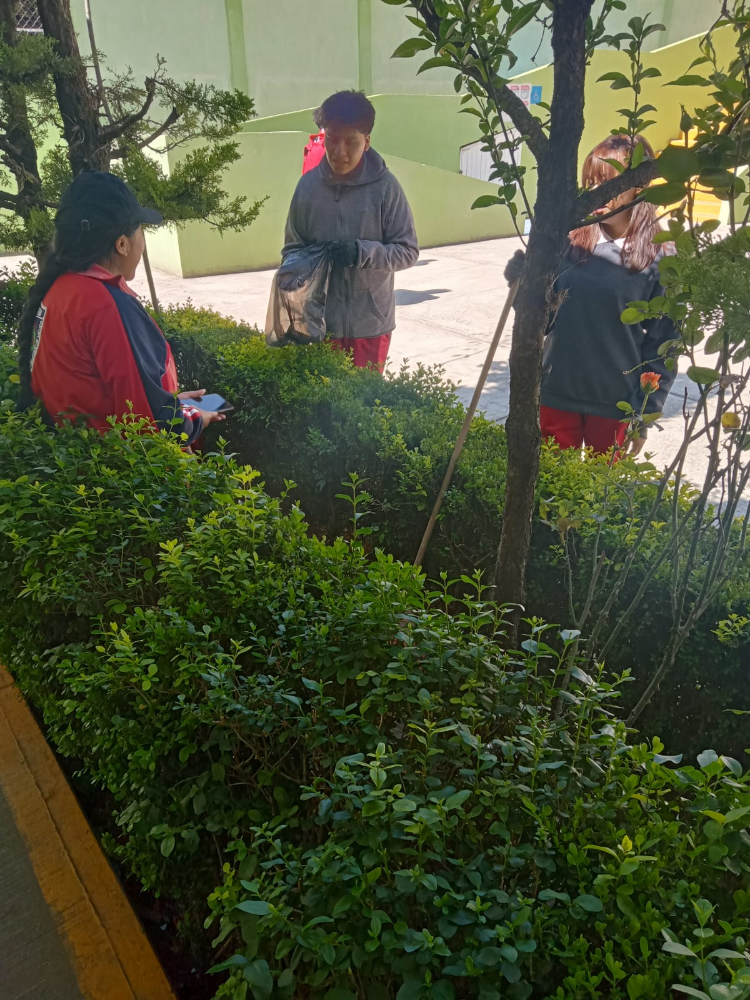

El cuidado del medio ambiente es el conjunto de acciones y hábitos que las personas realizan para proteger, conservar y mejorar el entorno natural en el que vivimos. Esto incluye la tierra, el agua, el aire, las plantas, los animales y todos los recursos naturales.
¿Por qué es importante?
Porque el medio ambiente nos da todo lo que necesitamos para vivir: aire limpio, agua potable, alimentos, materias primas, etc. Si lo dañamos, afectamos nuestra salud, la de otros seres vivos y la de futuras generaciones.
Los beneficios de la reforestación son numerosos. Los árboles capturan dióxido de carbono (CO₂), ayudando a combatir el cambio climático. También mejoran la calidad del aire, protegen el suelo de la erosión, regulan el ciclo del agua y crean hábitats para muchos animales. Además, los bosques reforestados pueden servir como espacios de recreación, educación ambiental y desarrollo sostenible para las comunidades cercanas.
Lo ideal en la reforestación es que las especies sean autóctonas, aunque también pueden traerse de otros lugares, pero lo mejor es que sean árboles de crecimiento rápido. En general, sembrar y reforestar tierras en mal estado tiene un efecto positivo, por la mejora ambiental y de los recursos.
Un proyecto de reforestación puede ser impulsado por gobiernos, instituciones educativas, organizaciones ambientales o comunidades interesadas en proteger la naturaleza. En las escuelas, por ejemplo, este tipo de actividades enseñan a los estudiantes la importancia del cuidado ambiental y los valores de responsabilidad y compromiso con el planeta.
Plan y acción
La reforestación es una práctica que consiste en plantar árboles en áreas donde se ha perdido la cobertura forestal debido a la deforestación, incendios forestales o actividades humanas. Esta práctica no solo ayuda a recuperar la biodiversidad y el equilibrio ecológico, sino que también tiene muchos beneficios para la sociedad. En este artículo, exploraremos los 10 beneficios principales que la reforestación aporta a nuestro planeta.
Los árboles son los pulmones del planeta, ya que absorben dióxido de carbono y producen oxígeno. Al plantar árboles, se aumenta la cantidad de oxígeno en el aire y se reduce la cantidad de dióxido de carbono, lo que ayuda a combatir el cambio climático.
La reforestación también ayuda a proteger el suelo de la erosión y la degradación. Los árboles ayudan a mantener la humedad en el suelo y previenen la pérdida de nutrientes, lo que mejora la calidad del suelo y lo hace más fértil.

Estrategias
Paso 1: Identifica el área a reforestar
Lo primero que debes hacer es identificar el área que deseas reforestar. Puedes elegir una zona que haya sido afectada por incendios, deforestación o degradación del suelo. También puedes optar por áreas urbanas que necesiten ser verdes. Lo importante es que la zona tenga las condiciones adecuadas para el crecimiento de los árboles.
Paso 2: Selecciona las especies adecuadas
No todas las especies de árboles son adecuadas para todas las zonas. Debes investigar cuáles son las especies que crecen mejor en tu área y cuáles son las que tienen mayor impacto en el ecosistema. Asegúrate de elegir especies nativas y que no sean invasoras.
Paso 3: Planea la logística
Una vez que tengas definida el área y las especies que se plantarán, es necesario planear la logística. Esto incluye el transporte de las plántulas, los materiales necesarios para la plantación, el personal que participará en la actividad, entre otros aspectos. Debes asegurarte de tener todo lo necesario para que la actividad se realice sin contratiempos.
Paso 4: Prepara el terreno
Antes de plantar los árboles, es necesario preparar el terreno. Si la zona ha sido degradada, es posible que sea necesario remover escombros, eliminar maleza y fertilizar el suelo. También es importante asegurarse de que el lugar tenga un buen drenaje para evitar la acumulación de agua.
Paso 5: Realiza la plantación
Finalmente, llegó el momento de la plantación. Asegúrate de hacerlo en la época adecuada y siguiendo las instrucciones para cada especie. Debes plantar las plántulas a una distancia adecuada para que no compitan entre sí por nutrientes y espacio. También es importante regarlas adecuadamente y protegerlas de posibles depredadores.
Conclusión
La reforestación es una actividad vital para la supervivencia del planeta. Sin embargo, es necesario tener un plan efectivo para que tenga el impacto deseado. Siguiendo estos 5 pasos simples, podrás crear un plan de reforestación que ayude a recuperar la biodiversidad y a reducir los efectos del cambio climático.
Conclusión
1. Plantación de árboles nativos
La plantación de árboles nativos representa una estrategia clave en la reforestación, ya que se adapta a las condiciones específicas de una región. Al elegir especies autóctonas, se promueve la biodiversidad al proporcionar hábitats adecuados para la fauna local y se restaura el equilibrio ecológico natural.
Además, estos árboles están mejor adaptados a las condiciones locales, lo que los hace más resistentes a las enfermedades y las plagas, lo que aumenta la probabilidad de éxito a largo plazo en la restauración del ecosistema. Esta técnica es esencial para recrear bosques saludables y sostenibles.
Esta es una de las estrategias clave que seguimos en Azada Verde. Nuestros técnicos trabajan todo el año recogiendo semillas autóctonas, que luego utilizamos para reforestar amplias extensiones de terreno.
2. Método de siembra directa
El método de siembra directa se ha convertido en una técnica de reforestación valiosa, especialmente en situaciones donde la alteración del suelo debe minimizarse, o cuando se necesita una solución de bajo costo para la restauración forestal. Esta estrategia involucra la colocación directa de semillas de árboles en el suelo, en lugar de utilizar plántulas o árboles jóvenes.
Uno de los principales beneficios del método de siembra directa es que puede ser eficiente tanto en tiempo como en recursos. No requiere la producción previa de plantulas en viveros, lo que puede ahorrar costos y tiempo en proyectos de gran envergadura.
Además, esta técnica es especialmente útil en áreas donde la perturbación del suelo debe minimizarse, como en zonas de alta erosión o en hábitats sensibles.
Un avance importante en la siembra directa ha sido el desarrollo de semillas pretratadas. Estas semillas están recubiertas con materiales que promueven la germinación y el crecimiento temprano, lo que aumenta la tasa de éxito de la reforestación.
Estos recubrimientos pueden contener nutrientes, fungicidas y otros elementos que protegen las semillas y ayudan a las plántulas a establecerse en condiciones a menudo desafiantes.
Además de ser una técnica eficaz, la siembra directa también fomenta la diversidad genética, ya que las semillas provienen de árboles madre diferentes. Esto puede contribuir a la adaptabilidad de los bosques frente a condiciones cambiantes, como el cambio climático.
Sin embargo, es importante tener en cuenta que el éxito de la siembra directa depende en gran medida de la elección de las especies adecuadas, las condiciones del sitio y el seguimiento continuo.
A pesar de estos desafíos, esta técnica se ha convertido en una herramienta valiosa en la restauración de ecosistemas forestales en todo el mundo.
3. Restauración natural asistida
La restauración natural asistida representa una estrategia que aprovecha el poder de la naturaleza para regenerar los bosques. En lugar de intervenir de manera intensiva, esta técnica se basa en la eliminación de amenazas humanas, como la sobreexplotación forestal o la presencia de ganado, así como en el control de especies invasoras.
Al eliminar estos factores estresantes, se permite que los procesos naturales de regeneración y sucesión ecológica se desarrollen sin interferencias significativas.
Esta estrategia se considera efectiva en áreas donde la degradación del ecosistema no es extrema y donde las comunidades vegetales nativas aún tienen la capacidad de regenerarse por sí mismas.
La restauración natural asistida a menudo requiere inversiones mínimas en términos de recursos y esfuerzo humano, lo que la convierte en una opción económica y sostenible para recuperar áreas forestales dañadas. Sin embargo, el monitoreo y la gestión continuos son esenciales para garantizar que el proceso de regeneración avance de manera efectiva.
Beneficios
Conclusión
El bosque en general, especialmente el tropical, ha experimentado una disminución drástica, lo que nos puede llevar a eliminar una fuente de riqueza no considerada hasta ahora. Con esto me refiero a eliminar una fuente de recursos medicinales, turísticos, climáticos y otros que están por conocerse.
En las partes donde nos presentamos para observar los terrenos se ve claramente la deforestación de lo que un día fueran cultivados por diferentes clases de árboles y arbustos. Y esto nos permite ver la necesidad de trabajar muy arduamente para ayudar en el sistema del medio ambiente. Debemos tener conciencia que al talar un árbol debemos cultivar otro en su lugar, hacer por lo menos a nuestro alrededor la tarea de reforestar en los lugares que aun se pueden salvar.
La deforestación presenta una gran variedad de problemas, así como de soluciones, lo cual depende de nosotros tratar de implementar las soluciones lo más rápido posible, para así no perder más bosques y recursos los cuales hace unas décadas pensábamos que eran inagotables, ahora nos damos cuenta que lo que pensábamos inagotable se está perdiendo poco a poco. Nosotros somos los culpables y los únicos con la capacidad de resolverlo.
Recomendación
Disminuir la presión sobre los recursos forestales, en zonas con déficit de abastecimiento de leña, hasta límites compatibles con criterios de desarrollo sostenible con la participación de los habitantes de las zonas involucradas e involucrando además al conjunto de la sociedad. Promover la aplicación de regímenes que posibiliten la reducción de la presión sobre los recursos forestales, ya sea incrementando la oferta de leña y/o reduciendo el consumo mediante la adopción de artefactos de conversión de leña en energía más eficientes. Donde sea necesario, promover el uso de fuentes de energía alternativas, sea hasta la recuperación de la capacidad productiva de los ecosistemas forestales, o bien procurando una mayor diversidad de fuentes de energía.